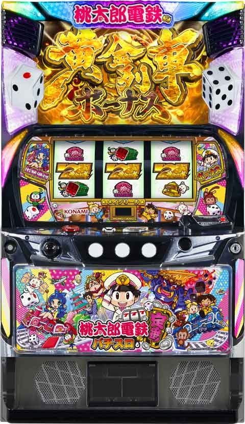
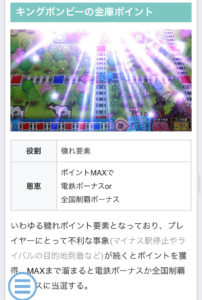
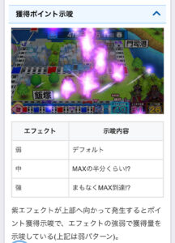
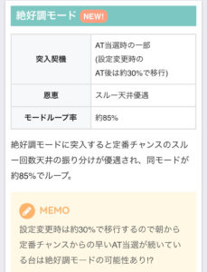
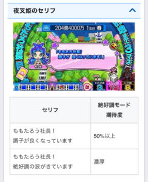
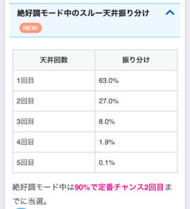
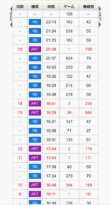
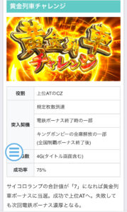

L桃太郎電鉄

【天井情報】
3年(約720G) 定番チャンス当選
定番チャンス最大6スルー7回目の定番チャンスで電鉄ボーナス当選
設定変更時 2年(約480G)、定番チャンススルー天井2回に短縮
【リセット判別】
ガックンあり。
据置時は液晶画面も引き継ぐため、画面が「目的地ゲーム、待機中～」の画面以外の時は据置濃厚。
【有利区間について】
有利切れで黄金列車チャレンジ突入。
有利区間切れ条件 差枚+2200枚前後で有利切れ？
狙い目
【リセット狙い】
電鉄ボーナス0スルー 1年目冬から
電鉄ボーナス1スルー 1年目春から
電鉄ボーナス2スルー 1年目春から
【周期天井狙い】
上位後は次回電鉄ボーナス濃厚のため0Gから。
電鉄ボーナス0スルー
2年目秋から
電鉄ボーナス1-4スルー
3年目秋から
電鉄ボーナス5スルー
積極派 1年目春から
慎重派 2年目秋から
電鉄ボーナス6スルー
1年目春から
【季節狙い】
冬なら総決算レース直前なので打てそう。
打ち出しの資産の額が500億以上なら総決算レースまで？
【定番チャンススルー天井狙い】
5か6スルーから
【キングボンビーの金庫ポイント狙い】
所持ポイント大、または貧乏神のセリフ「金庫があふれそうなのねん」で解放まで


【有利区間切れ狙い】
絶好調モード狙い時にボーダー調整する程度？
【絶好調モード狙い】
設定変更時のAT後は30%で突入。
AT当選時の一部でも突入。
・狙い目
以下の場合は2スルーまで
①リセット台
朝ニ0スルー、朝三0スルー
朝ニ1スルー 、朝三0スルー
朝ニ0スルー、朝三1スルー
②朝イチ以外
前回、前々回0スルー
示唆については夜叉姫のセリフ以外現状不明。
【重要示唆】
【コナミコマンド、夜叉姫セリフ】
・コナミコマンド 定番チャンス２回当選以内で成功濃厚以上
・夜叉姫セリフ 「電鉄ボーナスがかなり近くまで～」以上
電鉄ボーナス当選まで



やめ時
リスタートモード消化してやめ
上位後はボーナス当選まで
定番チャンス後はコナミコマンドや夜叉姫セリフで押し引きする
その他
【履歴の見方】
RB 定番チャンス
16:48ARTは電鉄ボーナス
17:44や18:41ARTはリスタートモードの引戻しと思われるが、有利切れてそうなタイミングや、一撃大量獲得後は上位AT突入の信号かも。

黄金列車チャレンジ
